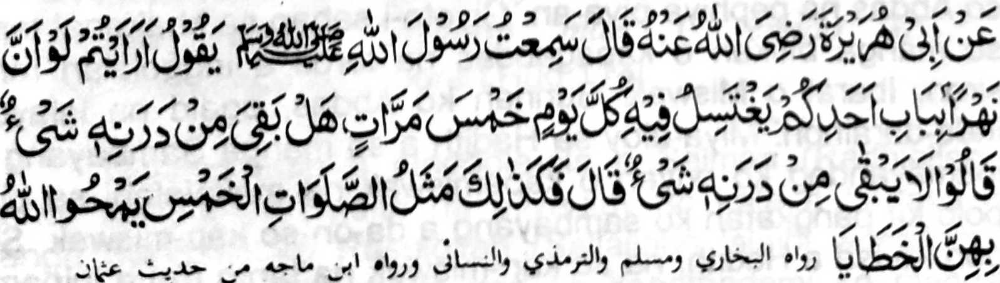

Miyakathitayan ko Abu Hurairah (Radhiallaho 'Anho) a pitharo iyan, "Miyaneg aken so Rasulollah (Sallallaho 'Alaihi Wasallam) a gi-i niyan tharo-on: 'Ino opama ka aden a lawasa-ig ko pamintoan o walay o isa rekano a gi-iron makaphaigo ko oman gawi-i sa makalima, ba aden pen a malamba-on a lod a maito bo.’ Pitharo iran, 'Da-a khalamba-on a lod a maito bo.’ Pitharo iyan, ’Manden so ibarat o Sambayang a lima a perila-an o Allah sabap kiran so manga dosa.'”
Miyaka thitayan ko Jabir (Radhiallaho Anho) a pitharo iyan a pitharo o Rasulollah (Sallallaho Alaihi Wasallam), 'Aya ibarato Sambayang a lima na lagido pethoga a lawasaig a madalem a matatago ko sangat o paitao o isa rekano a gi-i ron phaigo ko oman gawi-i sa maka lima. ’’
Kalalayaman a so pethoga a ig na soti ko manga boring, go saden sa kadalem a pethoga-an niyan na kasosoti ago kalingao niyan. So kaphaigo sangkanan a ig na khalalas iyan so boring ko lawas ago pekhasoti niyan. So Sambayang a inipamayandeg a ininggolalan so manga rokon niyan na pekhasoti niyan so niyawa ko langono manga dosa. Madakel a miya-aloy a Hadith a lagida-i sa ma-ana, minsan pen malo salakao a kiyapaka-okit iyan, a miya-panothol om bida-bida a manga Sahabah o Rasulollah (Sallallaho 'Alaihi Wasallam). So Abu Saeed Khudri (Radhiallaho 'Anho) na piyanothol iyan a miyaneg iyan so Rasulollah (Sallallaho 'Alaihi Wasallam) a gi-i niyan tharo-on:
"Omani isa ko lima Sambayang na pekhalalas iyan so manga dosa a pekhasogok pho-on ko kiyatondogan niyan a Sambayang So kaosaya si-i na, lagid angkoto a sakatao a mama a gomagalebek ko isa a Paktoria. Aya galebek iyan na aya okit iyan na pekhabongkosan niyan so lawas iyan sa bayanek. Ogaid na aden a lima a lawasa-ig a pethoga ko pageletan angkoto a Paktoria go giya walay a mama oto, na, si-i ko kapembaling iyan pho-on sa galebekan, na gi-i phaigo ko omani lawasa-ig. So rarad o Sambayang a makalima ko oman gawi-i na makaphelagid. Omani dosa phoon sa kinibagak (o sogo-an) go kiyasogok (o lalangan) ko pageletan o dowa Sambayang na perila-an sabap ko 'Istighfar' ago 'Taubah' a madadalem ko omani Sambayang”. So Rasulollah (Sallallaho 'Alaihi Wasallam) misabap sangka-iya a manga abaya-bayan, na aya antap iyan na so katangkeda sa so Sambayang na aden a piyakamemesa a bager iyan ko kalowa' sa Dosa. Odi tano maped ko limo o Allah, na mata-an a seketano na langon miyalogi. So karibat na reko manosiya. Mararani a aden a gi-i tano manggola-ola a di-i khaso-at o Allah a khasabapan sa Rarangit ago Siksa. Ogaid na ilaya niyo so kala-i ma-ap o Pekhababaya-an tano a Allah. Pinggonana-o Niyan sa kapangaling gagao reketano so okit a kakhakowa a tano ko limo Iyan. Tanto a piyakarata-rata sa ginawa o di tano makang-gona sangka-iya mala a limo iyan. So Allah na tanto a mababaya mamegay ko Limo Iyan apiya-i kaito a sabap. Miya-aloy sa Hadith, a opama ka so tao na makatorog a makanini-at sa kapezambayang iyan sa Tahajjud ogaid na da makanaw, na khakowa niyan so tarotop a balas o Tahajjud, apiya pen sekaniyan na totorogen phiya-piya ko masa a waqto a Tahajjud. lzan a a mala so Limo o Allah go izan a mala a kalogi ago kapapas, opama ka di tano makaparoli sa limo pho-on sa lagida-i a Pephamemegay.